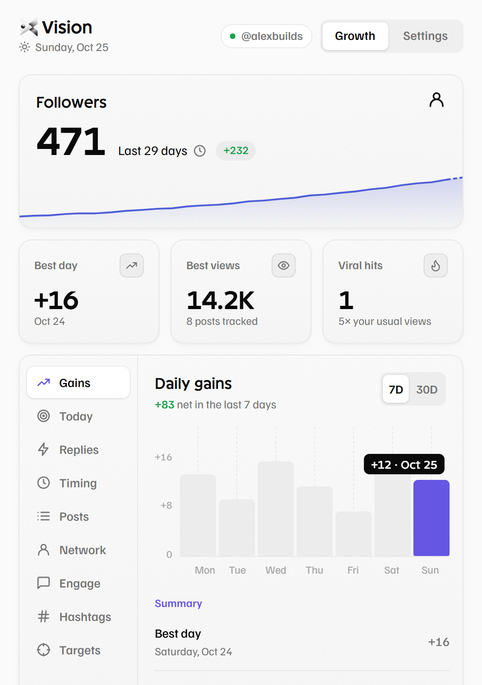
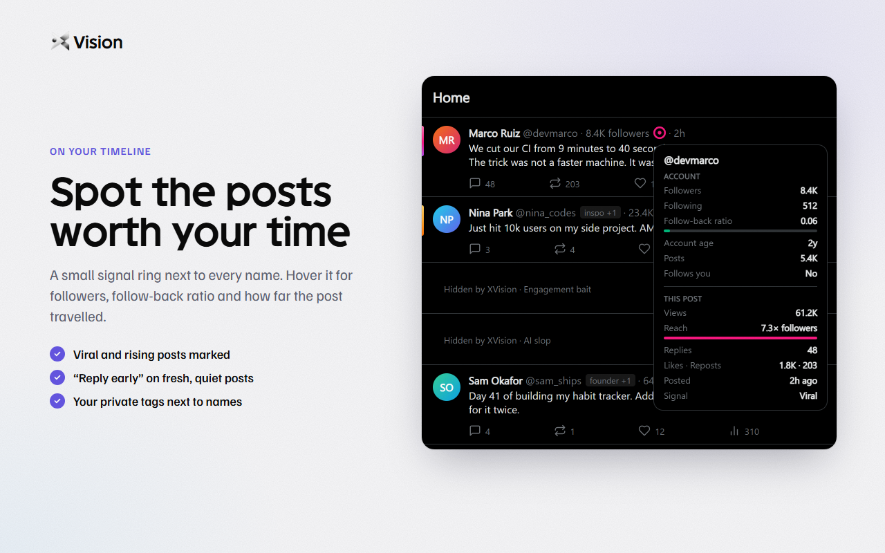
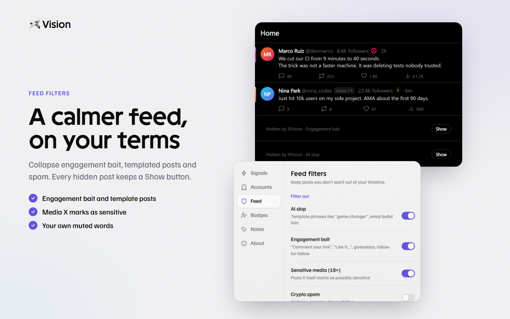
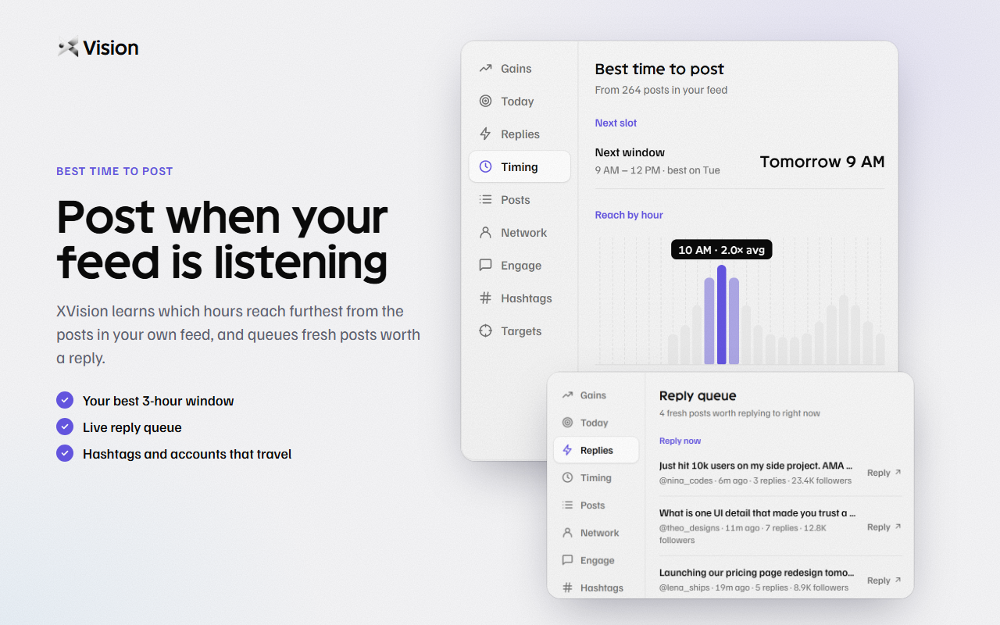
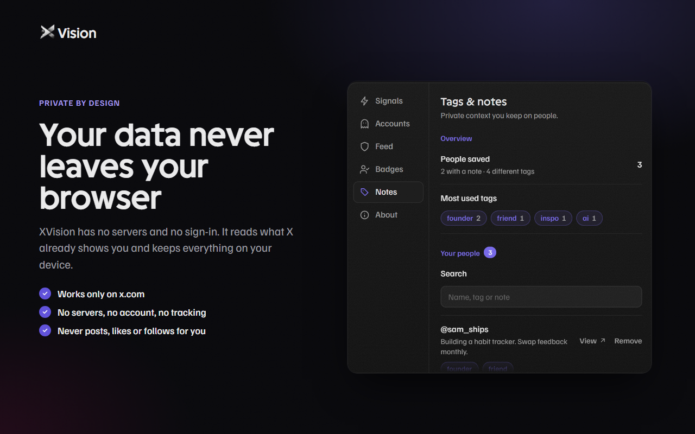

Follower trends, reach signals, the best time to post and a calmer feed, right inside X. Private by design: everything stays in your browser.

XVision works it all out from what X already shows you. No accounts, no servers.
Daily follower chart for 7 and 30 days, your best days, and every post rated against your usual views.
A small ring next to every name. Hover it for followers, follow-back ratio, account age and post reach.
Fresh posts from bigger accounts that still have few replies, flagged on your timeline and queued in the popup.
Collapse engagement bait, templated posts, crypto spam and sensitive media. Add your own muted words.
Learns which hours and hashtags reach furthest from the posts in your own feed.
Tag people and keep notes on them. Tags show next to their name as you scroll.




Practical playbooks for growing on X, and small tools that run right in your browser.
A clear profile, a narrow niche, and replies before posts.
Guide · 6 minWhich posts to reply to, and how to write replies people click.
Guide · 5 minWhy generic charts mislead, and how to find your own window.
ToolSplit long writing into a numbered thread under the limit.
ToolCount characters the way X does, links and emoji included.
ToolSave a video or GIF from a public post as an MP4.
Until XVision is on the Chrome Web Store, install it directly. Works in Chrome, Edge, Brave and Arc.
chrome://extensions into the address bar.Runs on x.com and nowhere else. It can't see your other tabs.
No account, no sign-in and no network requests of its own.
Stats, settings and notes live in your browser. Remove the extension and they're gone.
XVision never posts, likes, follows or replies for you.